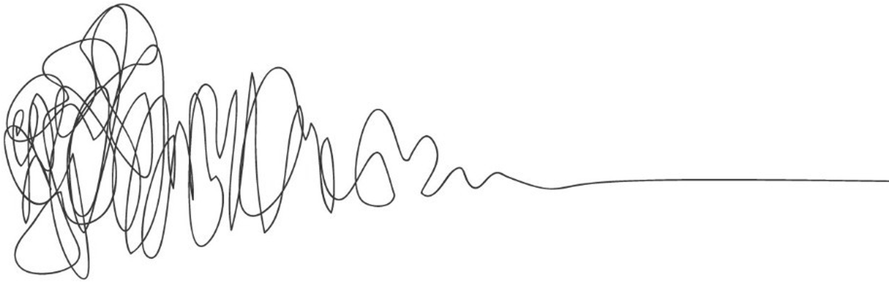
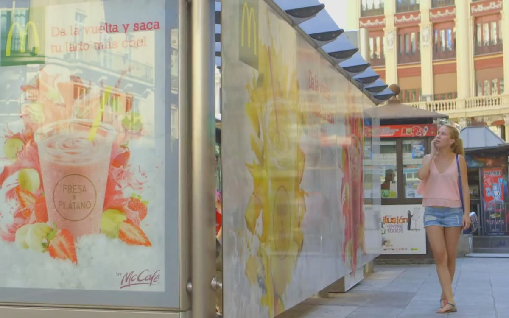

OOH, McDonald’s
Sonrisómetro
Paga el café con una sonrisa. Un mupi la medía y, cuanto más sonreías, antes se llenaba la taza.
+5.000 pruebas de producto
Innovación e IA. Medios, marketing y tecnología.
El problema de la tecnología casi nunca es lo que puede calcular o hacer. Es su relación con el entorno. Llevo treinta años trabajando en la convergencia, en el punto de contacto de la interfaz, en esa superficie en la que se produce la experiencia de interactuar.

Estamos rodeados de datos. Encontrarles sentido los convierte en información.
He creado equipos, metodologías de trabajo y especificaciones. He coordinado esos equipos y he formado a personas que otras empresas quisieron incorporar. Y, además de la visión, sé encontrar los recursos para llevar las ideas a cabo.
Ver hacia dónde va una tecnología, qué condiciones le faltan y cuándo tiene sentido apostar por ella.
Encontrar los recursos para llevar las ideas a cabo: financiación, aliados y personas.
Crear equipos desde cero y coordinarlos: técnicos, de producción y creativos.
Definir metodologías de funcionamiento y escribir las especificaciones de lo que hay que construir.
Llevar los proyectos de la estrategia al piloto en producción: inteligencia artificial, voz y experiencias que mezclan lo físico y lo digital.
Formar y mentorizar a personas y equipos. Algunos de ellos fueron lo que otras empresas quisieron adquirir.
Como consultor, como responsable de proyecto o dentro de tu equipo. Si lo que buscas es una empresa, está Mindgeist.
OOH, McDonald’s
Paga el café con una sonrisa. Un mupi la medía y, cuanto más sonreías, antes se llenaba la taza.
+5.000 pruebas de producto

OOH, McDonald’s
Escápate al sitio más cool. Una marquesina en pleno calor de Madrid y Barcelona te recortaba, te llevaba a una playa e imprimía la foto con un cupón para un smoothie.
+3.500 foto-cupones

VR, experiencial, Vodafone
Nos pidieron recrear la bajada de un puerto. Bicicletas intervenidas, sensores y vídeo esférico estabilizado para hacerla confortable. Al año siguiente, la segunda versión: subida, bajada y contrarreloj.
20 ciudades, 8.500 participantes
Propuestas que no llegaron al público. Estas son algunas de las que más me gustan.

Pantallas en la calle
Ofertas de vuelos en las pantallas de una plaza, con compra al momento: ¿te irías el 13 de octubre a Glasgow por 4 €?

Experiencia, contenido
Vivir hoy un futuro que aún no hemos alcanzado: tu propia mano en la vida cotidiana de un futuro cercano.

Producto, música
Cada cinta es una historia: listas de canciones que se comparten acercando el teléfono.
Antes: “¿Por qué todos vamos a comprar un iPad?”, 2010
No se trata de inmersión, se trata de que nos envuelva. La realidad virtual te encierra en otro mundo; lo que me interesa es que el lugar que ya ocupas te conteste. Para eso, la interfaz clave es la voz.
Antes: “La inteligencia artificial ya está aquí”, hacia 2018
Creo en la soberanía de los modelos de lenguaje, por tres razones: la métrica con la que trabajan, la dependencia de un proveedor y la jurisdicción bajo la que corren.
Antes: el reglamento europeo de protección de datos, 2017
Las empresas europeas deberían trasladar su infraestructura digital a Europa, y mejor todavía ser dueñas de ella. Es parte de algo mayor: la soberanía tecnológica.